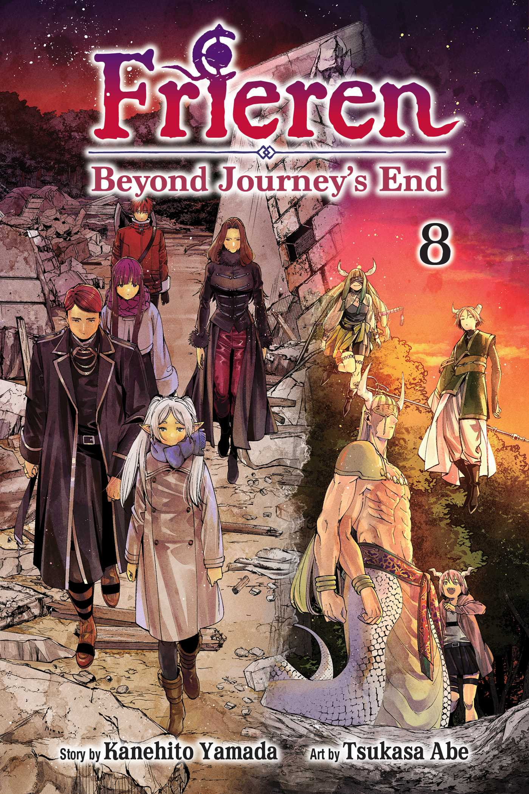

Frieren: Beyond Journey's End is a 2023-2024 anime series about an ancient elven mage who, after a long journey with her human companions to defeat the Demon King, struggles to understand and appreciate life's transient nature as her comrades die of old age. Produced by MADHOUSE, the story begins with the heroes' victory but focuses on Frieren's subsequent journey with a new party, including her apprentice Fern, as she tries to fulfill the last wishes of her former friends and learn to connect with others. A second season is planned to premiere in January 2026. [1, 2, 3]
Premise
• The story starts after the defeat of the Demon King by a Hero's party, which included the elf Frieren. [1, 3]
• Frieren, being an elf with a very long lifespan, outlives her human companions, like the hero Himmel. [2, 4, 5]
• Her companions' deaths serve as a stark reminder of her own long life and her emotional distance from them, leading her to regret not forging deeper connections. [2]
• She then embarks on a new journey, accompanied by the young apprentice Fern and the warrior Stark, to understand the human experience and the meaning of time and relationships. [1, 2]
Key Themes
• Time and Mortality: The series explores the different perceptions of time between immortal elves and mortal humans, and the emotional impact of loss. [1, 2, 6]
• Connection and Understanding: Frieren's journey is one of self-discovery as she learns what it means to truly live, connect with others, and understand the fleeting nature of relationships. [1, 6]
• The "Aftermath" of Adventure: Unlike typical fantasy stories that end with the defeat of the antagonist, Frieren begins after the grand adventure, focusing on the quiet aftermath and the characters' personal growth in a world at peace. [1, 7]
Production [1, 8, 9]
• Studio: The anime is produced by MADHOUSE.
• Director: Keiichirō Saitō.
• Composer: Evan Call.
Where to Watch [1]
• The first 28-episode season is available on platforms like Crunchyroll.
AI responses may include mistakes.
[1] https://www.crunchyroll.com/series/GG5H5XQX4/frieren-beyond-journeys-end
[2] https://www.commonsensemedia.org/tv-reviews/frieren-beyond-journeys-end
[3] https://en.wikipedia.org/wiki/Frieren
[4] https://en.wikipedia.org/wiki/Frieren_(character)
[5] https://www.youtube.com/watch?v=qGFWER0uf8I
[6] https://www.imdb.com/title/tt22248376/
[7] https://www.crunchyroll.com/news/guides/2023/11/15/what-is-frieren-beyond-journeys-end-the-fantasy-adventure-series-explained
[8] https://en.wikipedia.org/wiki/List_of_Frieren_episodes
[9] https://www.youtube.com/watch?v=gWe96UK8v5w